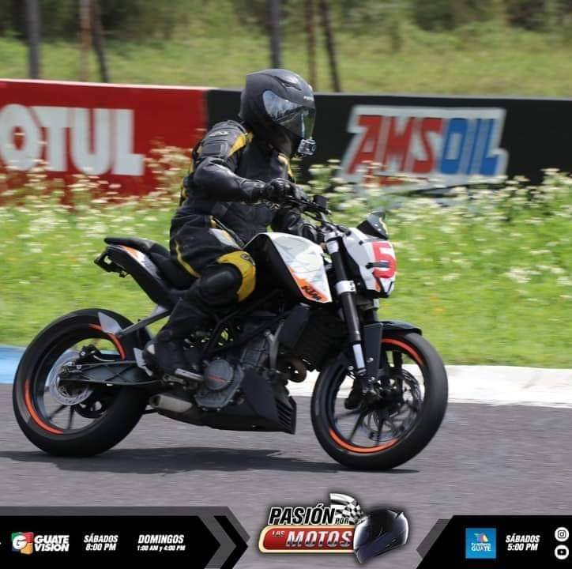

Metas y Aspiraciones:
Con metas claras en mente, Edvin aspira a ser un programador reconocido. Su objetivo a corto plazo es dominar la programación en un mes, demostrando su naturaleza autodidacta, responsabilidad y espíritu divertido en el proceso.